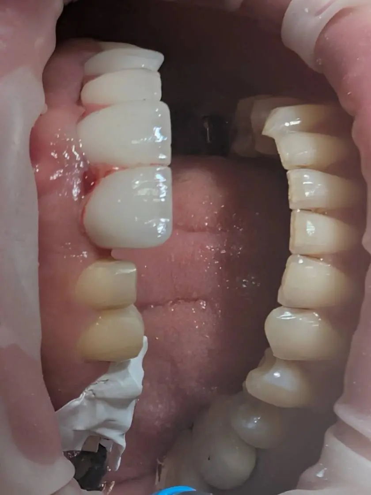

نسخه استخراجشده؛ ترجمه یا تأیید علمی انجام نشده است. وضعیت: captured
روز تحویل چند واحد لمینیت است. دندانها یکییکی باند میشوند. دندانهای تراشخوردهای که هنوز نوبتشان نرسیده، در این فاصله چه خطری دارند؟

در تحویل چند واحد لمینیت، رعایت توالی باندینگ اهمیت حیاتی دارد. دندانی که هنوز نوبت باندش نرسیده، اگر در معرض اسید، باند یا سمان قرار بگیرد، عملاً از پروتکل خارج میشود.
در این کیس، دندانهای تراشخوردهای که هنوز نوبتشان نبود با نوار تفلون پوشانده شدند و نوار بهصورت ملایم به داخل سالکوس هدایت شد تا در جای خود فیکس بماند.
پس از قرار دادن هر واحد روی دندان و تمیز کردن کامل، قبل از کیور، نوار تفلون از دندانهای مجاور برداشته میشود تا در نشستن دقیق لمینیتها اختلال ایجاد نکند.
در باندینگ چندواحدی، فقط دندانی که در آن لحظه باند میشود باید وارد چرخهی مواد شود. ایزولاسیون با تفلون راهی ساده و مؤثر برای حفظ انسجام پروتکل است.
وقتی لثه روی فینیشلاین را گرفته باشد، Try-in و سمانکردن روکش بدون خطا ممکن نیست؛ این وضعیت پیش از Try-in و سمان راهکار جداگانهای میخواهد.